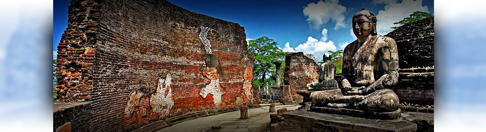

Discover Sri Lanka
Give your tedious minds a tranquilizing break in a miraculous country. You could enjoy while traveling an adventurous experience blended with a shindig feeling in Sri Lanka with Green tree. Your mind will be blown with the amazing admirations and curious expeditions with tour operators in Sri lanka..
Day 1
Your journey with Green tree triggers by the moment you set foot in Sri Lanka. You’d be escorted to a fabulous hotel in Sigiriya, where you’d rest for a while, then in the evening, to the spectacular “lion’s rock” Fortress. This fortress, also called as Sigiriya rock, is one of the enchantments in Sri Lanka with an alluring legend, where you can climb the rock and have an adventure. The significance is magnified as this Fortress is declared as one of the UNESCO heritage sites in Sri Lanka. Thereafter your ride points to the Minneriya National park, which makes home for leopards, elephants and so many other wild lives. Also this park is a perfect well-known eco- tourism location in Sri Lanka. After the adventurous ride you’ll be transported back to a comfortable hotel, for you to be energized after an exciting day. With a comfy overnight sleep and a delicious dinner its time to prepare for the Day 2 of “Let’s see Sri Lanka”
Day 2
You’d be served with a splendid breakfast before you start your wondrous journey. Your eyes will glaze with the elegance of the Dambulla temple (Golden Rock Temple) when you are taken to the Rajamaha Temple of Rangiri Dambulla. This is a sacred place for Buddhists, for the glorious Buddhas’ statues and Hindus, for the enshrined Gods statues this place embraces. How curios are you to learn about herbs and spices? If the answer is “Very Much”, you’ll be exhilarated to see the valued spices and healing herbs such as Sandalwood, Margosa, Cocoa, Citronella, Almond, Jasmine and Coconut, while your visit to spice garden in Mathale on your way to Kandy. After checking in at a charming hotel to freshen up in Kandy, the city divine with a legendary history running to the era of the Kandyan Kingdom where the nature was royal and the people were noble, you’ll be toted to the apple of the city, the Glorious Temple of Tooth, where the sanctified left upper canine tooth of the Lord Buddha is housed, to bless your evening. Then you’ll be returned back to the hotel to have a majestic dinner before a royal sleep over.
Day 3
You’ll be awaken before a delectable breakfast ahead, to electrify you for the upcoming challenges jumbled with extraordinary enthusiasms. We will then have a roam around the glorious city Kandy, adjoining upper lake drive where the serenity dominating the beauty with the blurry water dotted with the birds. The lakeside is one of the tranquilities Kandy owns. The next wonder you are about to behold is the Pinnawala Elephant orphanage where homeless elephants are homed with love and care and shelter. This bosom is situated in the northwest of the town Kagalle. Then you’ll be taken to the hotel again to spend a leisure full evening to ease off the fun you had within last few days.
Day 4
After an appetizing breakfast in the morning you can enjoy the artistry of the Royal botanical garden in Peradeniya, the largest in Sri Lanka. This garden will attract you with its unique beauty and majesty. Then we’ll proceed to Nuwara Eliya visiting Tea Factory and Tea plantation where you’ll be filled with amazing, advantageous facts about tea. After a brief check in at a Hotel we’ll be sightseeing in the beauteous land Nuwaraeliya. This city is a mountain station covered with green grass giving a colonial British touch. Being blessed with salubrious climate with breath taking views of valleys, meadows, mountain tops and greenery are the fascinations of this city. To be complete we will furnish your tour with a drive around Lake Gregory one of the most prominent attractions in Nuwaraeliya. Temperatures of this humid city are 14C-21C (Jan- April) 16C-18C (May-Aug) 15C- 18C (Sept-Dec). After this wonderful tour you’ll rest in the hotel until the next morning, which will be a beginning for a new adventure.
Day 5
Breakfast will be served with a grand touch. Then we will visit one of the most adventurous places in Sri Lanka, Horton plains, by Safari Jeeps. The natural beauty in this place is irresistible which beckons more and more people to visit the place. The uniqueness magnifies on this country due to the rare animal and plant life this plains inherits. Then your journey will be proceeded to Benthota, an eye-catching city covered with blue with charming spots for the foreigners to stumble upon, via Kitulgala, the location of the Academy Awards winning movie by David Lean “The Bridge over the River Kwai” A grand hotel will serve you with perfection when you are escorted there to spend a peaceful eve and a dreamful night.
Day 6
Breakfast will be served at the hotel with grandness. Galle will be your next stop, the city with a colourful history which is declared to be a World Heritage Site. The jewel of this city is the enchanting beach called “Unawatuna” where you can dive, drive and thrive your enthusiasm. After relaxing at the beach side of “Unawatuna”, you’ll be returned back to Bentota, and visit the Turtle Hatchery in Kosgoda. You will be empathized by seeing an innocent scenery of tanks filled with new born turtle hatchlings. The night will be spent in a granular hotel to gather up the memories you had during this mesmerising week.
Day 7
After breakfast proceed to Trincomalee via Minneriya. Visit Minneriya National ParkMinneriya for a Jeep Safari. Overnight stay Trincomalee.
Day 8
After a morning breakfast at the hotel you will be transported to the airport for your departure. Leaving with you some wonder memories of Sri Lanka